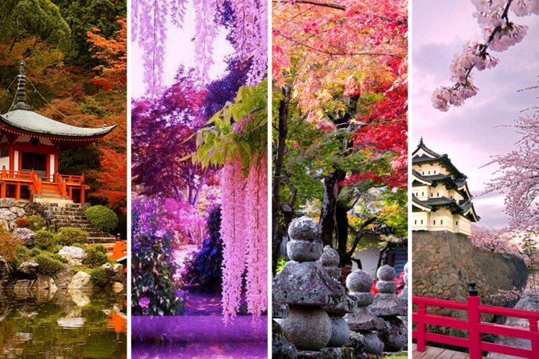
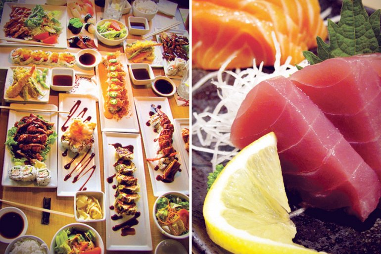

Japanese attractions
Япония является одним из самых популярных туристических направлений в мире. Здесь Вас ждет уникальное сочетание традиционных храмов и зданий прошлого, с современными достижениями в области архитектуры и технологий. Туристы, попав в эту страну, могут погрузиться в японскую историю и культуру, а также получить экскурс в будущее, при помощи нынешней науки. Многие исторические памятники используются по их предназначению, оставаясь при этом открытыми для общественности. Невероятную красоту Японии можно увидеть в любое время года. Вашему вниманию представляется краткий обзор достопримечательностей Японии, которые вы должны увидеть собственными глазами.

Japanese cuisine
Nothing says more about Japan than well-cooked sushi and tofu rolls. Visiting the country, you will be able to experience the real delight of taste from Japanese cuisine. No one knows exactly how many festivals take place in Japan every year, but it is estimated to be about 100,000. This means that whenever you come to Japan, you can always get to some festival.
